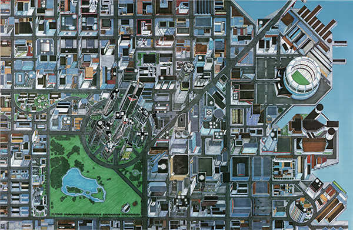

Mapa de Night City visto en Cyberpunk 2020
Es aquí donde tus aventuras en el mundo de Cyberpunk serán desarrolladas. Puedes vivir de forma lujosa en uno de los masivos rascacielos o, si no cuentas con los medios o te encanta el peligro,
puedes aquirir un apartamento barato en una de las tantas zonas de combate.
Quién sabe si mañana tendrás que dormir en el suelo después de un atraco que salió mal o en un lujoso condominio en las zonas más seguras de la ciudad como recompensa por ayudar a una figura corporativa.
Puedes ir a bares a pasar un buen rato solo para que presenciar un tiroteo entre bandas criminales o ver de primera mano un caso de Cyberpsychosis.
No se sabe que puede ocurrir, pero así de impredecible es el mundo de Cyberpunk .
